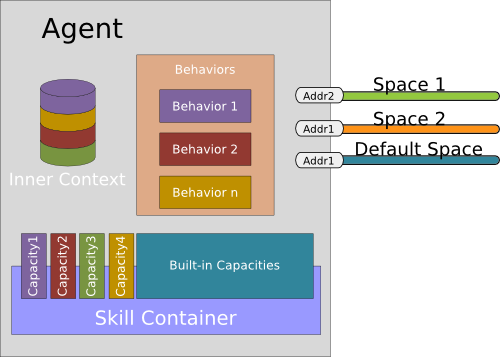

Agent Reference
- 1. Where is living an agent?
- 1.1. Default Context
- 1.2. External Contexts
- 1.3. From Flat to Hierarchical System with the Inner Context
- 1.4. Universe Agent and Universe Context
- 2. Open Architecture of an Agent
- 3. Defining an Agent
- 3.1. Defining an empty agent
- 3.2. Agent Attributes
- 3.3. Agent Actions
- 3.4. Extending an Agent
- 3.5. Modifiers
- 4. Behaviors of an Agent
- 4.1. Initialization Handler
- 4.2. Guarded Initialization Handler
- 4.3. Destruction Handler
- 4.4. Guarded Destruction Handler
- 4.5. Reactive Behaviors
- 4.6. Parallel Execution of the Reactive Behaviors
- 4.7. Pro-active Behaviors
- 5. Capacities and Skills
- 5.1. Defining a Capacity and a Skill
- 5.2. Giving a Skill to an Agent
- 5.3. Giving a Built-in Skill to an Agent
- 5.4. Using a Capacity with the Getters
- 5.5. Using a Built-in Capacity with the Getters
- 5.6. Using a Capacity with the Extension Methods
- 5.7. Using a Built-in Capacity with the Extension Methods
- 6. Legal Notice
This document describes the features related to the definition of an agent in SARL. Before reading this document, we recommend that you read the General Syntax Reference, the Skill Reference, and the Built-in Capacity Reference.
An agent is an autonomous entity having a set of skills to realize the capacities it exhibits.
1. Where is living an agent?
Before detailing the architecture and the definition tools of an agent, it may be helpful to understand where is "living" an agent in the multi-agent system.
The following figure illustrates the position of an agent (at the center of the figure) in different contexts. The details are discussed below.

1.1. Default Context
When it is spawn, an agent is living inside the system in a place named "Context".
A Context defines the boundary of a sub-system, and gathers a collection of spaces. A Space is the support of the interaction between agents respecting the rules defined in the spaces' specification.
It ensures the existence of a common shared space to all agents in the same context. Each agent can then create specific public or private spaces to achieve its personal goals (the blue space on the figure above).
An agent has an identifier for each space it is involved in. For the case of event-based interaction spaces, this identifier is called "address".
1.2. External Contexts
During its lifetime, an agent may join and participate in other contexts that are not the default context. They are called the external contexts of the agent.
For joining or leaving a context, the agent must use the ExternalContextAccess built-in capacity. It is detailed in the
Built-in Capacity Reference.
1.3. From Flat to Hierarchical System with the Inner Context
In 1967, Arthur Koestler coined the term holon as an attempt to conciliate holistic and reductionist visions of the world. A holon represents a part-whole construct that can be seen as a component of a higher level system or as whole composed of other self-similar holons as substructures.
Holonic Systems grew from the need to find comprehensive construct that could help explain social phenomena. Since then, it came to be used in a wide range of domains, including Philosophy, Manufacturing Systems, and Multi-Agents Systems.
Several works have studied this question and they have proposed a number of models inspired from their experience in different domains. In many cases, we find the idea of agents composed of other agents.
More recently, the importance of holonic multi-agent systems has been recognized by different methodologies such as ASPECS or O-MASE.
In order to achieve this, SARL agents are self-similar structures that compose each other via their contexts. Each agent defines its own context, called Inner Context. Because this inner context may be joined by other agents, or agents may be spawn inside this inner context, it is possible to build a holarchy.
1.4. Universe Agent and Universe Context
At the top level of the holarchy, we consider an omnipresent agent. It is named the Universe Agent (or Root Agent). The runtime environment will be in charge of spawning the first agents in the system as members of the Universe Agent.
The inner context of the Universe Agent is called the Universe Context, or the Janus Context if you are using the Janus runtime environment.
2. Open Architecture of an Agent
The architecture of an agent is illustrated by the following figure.

2.1. Built-in Capacities
An agent has a set of built-in capacities considered essential to respect the commonly accepted competencies of agents, such autonomy, reactivity, pro-activity and social capacities.
The full set of Built-in Capacities will be presented in the corresponding
Reference document. Among these
built-in capacities, is the Behaviors capacity that enables
agents to incorporate a collection of behaviors that will determine
its global conduct.
2.2. Agent Behaviors
An agent has also a default behavior directly described within its definition.
A Behavior maps a collection of perceptions represented by Events to a sequence of Actions. The various behaviors of an agent communicate using an event-driven approach.
An Event is the specification of some occurrence in a Space that may potentially trigger effects by a listener (e.g., agent, behavior, etc.)
3. Defining an Agent
An agent is declared with the agent keyword. In the agent's body block, we can declare Mental States
(in the form of attributes), Actions and Behaviors.
3.1. Defining an empty agent
The following code illustrates the definition of an agent named MyAgent, and that is empty.
Basically, this agent does nothing, and does not react on events.
agent MyAgent {
}
3.2. Agent Attributes
The mental state of an agent is composed by the data in the knowledge of the agent. Most of the time, the mental state is implemented as a collection of attributes in the agent.
According to the General Syntax Reference,
the attributes may be modifiable (when declared with the var keyword), or unmodifiable (when
declared with the val keyword).
agent MyAgent {
// Defining a modifiable element of the mental state
var mentalStateElement1 : String
// Defining an unmodifiable element of the mental state
val mentalStateElement2 : boolean = true
}
3.3. Agent Actions
It is allowed to define actions (methods) in the agent. The syntax described is described in the General Syntax Reference.
The example below illustrates the creation of two actions in the agent.
agent MyAgent {
uses Logging
// Defining an action without parameter nor return type
def myAction1 {
info("Hello world")
}
// Defining an action with a variadic parameter and no return type
def myAction2(param : int*) {
info("params are " + param)
}
}
3.4. Extending an Agent
In some use cases, it is useful to specialize the definition of an agent. This mechanism is supported by the inheritance feature of SARL, which has the same semantic as the inheritance mechanism as the Java object-oriented language.
The extended agent is specified just after the extends keyword.
In the following code, a first agent is defined with the name
MyAgent and an attribute named attr.
A second agent MySubAgent is defined as the extension of the first agent. It contains a function named
action, which is displaying the inherited attribute.
agent MyAgent {
protected var attr : String
}
agent MySubAgent extends MyAgent {
uses Logging
def action {
info(attr)
}
}
3.5. Modifiers
Modifiers are used to modify declarations of types and type members. This section introduces the modifiers for the agent. The modifiers are usually written before the keyword for defining the agent.
The complete description of the modifiers' semantic is available in this section.
Agent Modifiers
An agent may be declared with one or more modifiers, which affect its runtime behavior:
- Access modifiers:
public: the agent is accessible from any other type (default);package: the agent is accessible from only the types in the same package.
abstract: the agent is abstract and cannot be instanced.final: avoid to be derived.
Examples:
public agent Example1 {
}
package agent Example2 {
}
abstract agent Example3 {
}
final agent Example4 {
}
Field Modifiers
The modifiers for the fields in an agent are:
- Access modifiers:
protected: the field is accessible within the same package, and derived agents;package: the field is accessible only within the same package of its agent;private: the field is accessible only within its agent (default).
Examples:
protected var example1 : Object
package var example2 : Object
private var example3 : Object
Method Modifiers
The modifiers for the methods in an agent are:
- Access modifiers:
protected: the method is accessible within the same package, and derived classes (default);package: the method is accessible only within the same package as its class;private: the method is accessible only within its class.
abstract: the method has no implementation in the class.dispatch: the method provides an implementation for the dispatch method mechanism.final: the method cannot be overridden in derived classes.static: the method is a class method, not an instance method.synchronized: the method is synchronized on the class instance.
Examples:
// Protected access function
protected def example1 { }
// Package access function
package def example2 { }
// Private access function
private def example3 { }
// Abstract function
abstract def example4
// Not-overridable function
final def example5 { }
// Static function
static def example6 { }
// Synchronized function
synchronized def example7 { }
// Dispatch functions
dispatch def example8(p : Integer) { }
dispatch def example8(p : Float) { }
Restriction on the Nested Type Modifiers
All the modifiers for the nested types are allowed except
public.
4. Behaviors of an Agent
The behaviors of an agent correspond to the units that are executed by the agent for exhibiting its general behavior.
The execution of the behaviors are related to the life cycle of the agents. Every agent is following the steps:
- Initialization: the agent react on the
Initializeevent; - Lifetime: the agent execute its behaviors. They may be:
- reactive: the agent react when it is receiving events, or
- proactive: the agent executes by itself one of its behaviors.
- Destruction: the agent react on the
Destroyevent.
The definition of the reactive behaviors is based on the event handling mechanism of SARL. Events may be emitted in spaces, and received by the agents belonging to these spaces. An agent may indicate that it is interesting for receiving an event by specifying an event handler using the following syntax:
on EventName [Guard] {
Statements
}
EventName is the name of the events to wait for. Guard is the optional definition of a predicate
that may be true for executing the Statements. The statements are executed only if an event with the given name is
received, and if the guard is true.
In the guard and the statements, it is possible to use the instance of the received event: the occurrence.
This instance is represented by the occurrence keyword. It is an implicit
variable as the keywords this and it.
4.1. Initialization Handler
When an agent is ready to be executed by the runtime environment, it receives the Initialize event.
This event is defined as:
interface Initialize extends Event {
}
It contains the list of the parameters given to the spawning function (as specified in the built-in capacities).
agent MyAgent {
uses Logging
on Initialize {
info("My spawner is " + occurrence.spawner)
info(
"My initialization parameters are: "
+ occurrence.parameters )
}
}
4.2. Guarded Initialization Handler
Because Initialize is an event, the handler in the agent could use a guard. This feature enables
the developer to write different initialization blocks depending on the guards of the handlers.
In the following example, the first event handler is executed when the Initialize event has
no parameter. The second event handler is executed when the event has at least one parameter.
agent MyAgent {
uses Logging
on Initialize [ occurrence.parameters.empty ] {
info("Initialization without parameters")
}
on Initialize [ ! occurrence.parameters.empty ] {
info("Initialization with parameters: "
+ occurrence.parameters )
}
}
4.3. Destruction Handler
The counterpart of Initialize is the event Destroy. This event is defined as:
interface Destroy extends Event {
}
Example:
agent MyAgent {
uses Logging
on Destroy {
info("Destroying the agent")
}
}
4.4. Guarded Destruction Handler
As for Initialize, the handlers of the Destroy event could be guarded.
In the following example, the first event handler is executed when the Destroy
is receivedand there is resource stored in the corresponding field. The second event handler
is executed when there is no resource.
agent MyAgent {
uses Logging
var resource : Object
on Destroy [ resource !== null ] {
info("Destroying the agent when there is a resource")
}
on Destroy [ resource === null ] {
info("Destroying the agent when there is no resource")
}
}
4.5. Reactive Behaviors
The reactive behavior of an agent is specified with a collection of event handlers. The principle of a reactive behavior is to execute a part of the global agent behavior when something has happening in the agent, or in its environment.
In the following example, the agent is reacting to the reception of the SomethingChanged event.
As for all the event handlers, it could be guarded by a predicate.
agent MyAgent {
uses Logging
on SomethingChanged {
info("Reactive behavior")
}
}
4.6. Parallel Execution of the Reactive Behaviors
When an event is received and the guard of the corresponding handler is true, the event handler is said to be triggered.
When multiple event handlers are triggered at the same time, they are all executed in parallel.
In the following example, the two handlers for the SomethingChanged event are executed in parallel.
agent MyAgent {
uses Logging
on SomethingChanged {
info("First reactive behavior")
}
on SomethingChanged {
info("Second reactive behavior")
}
}
4.7. Pro-active Behaviors
A proactive behavior is a part of the global behavior of an agent that the agent is deciding to execute by itself. The execution of a reactive behavior is initiated by a part of the code external to this behavior. In opposite, the initiator of the execution of a proactive behavior is the agent itself.
In SARL, a proactive behavior is a behavior that is scheduled by the agent. The scheduling
mechanism is provided by the Schedules built-in capacity.
In the following example, the agent execute its proactive behavior every second.
agent MyAgent {
uses Schedules, Logging
on Initialize {
every(1000) [
info("Run a pro-active behavior")
]
}
}
5. Capacities and Skills
An agent is an autonomous entity having a set of skills to realize the capacities it exhibits. An agent has a set of built-in capacities considered essential to respect the commonly accepted competencies of agents, such autonomy, reactivity, pro-activity and social capacities.
5.1. Defining a Capacity and a Skill
The definition of a capacity or a skill is out of the scope of this reference document. For details, please read the Capacity Reference, and the Skill Reference.
In the rest of this section, it is assumed that the following capacity and skill are defined:
capacity Cap {
def action
}
skill Ski implements Cap {
uses Logging
def action {
info("Action")
}
}
5.2. Giving a Skill to an Agent
When an agent must use a capacity in one of its behaviors, it must own an implementation of this capacity: a skill.
For assigning a skill to an agent, the instance of the skill must be created. Then, it is associated with the
implemented capacity.
In the following example, the agent is creating the Ski skill. This instance is associated with
the corresponding capacity Cap with the function setSkill(Skill, Class<? extends Capacity>*).
When the function setSkill is returning, the agent becomes able to use the skill.
agent MyAgent {
on Initialize {
var theSkill = new Ski
setSkill(theSkill)
}
}
5.3. Giving a Built-in Skill to an Agent
Because the built-in capacities are supported by the runtime environment, the corresponding skills are given to the agent. It means that there is no need for an agent to set a skill for a built-in capacity.
However, in rare cases, it is possible to use the function setSkill(Skill, Class<? extends Capacity>*) for
changing the implementation of a built-in capacity.
5.4. Using a Capacity with the Getters
After a skill is registered into the agent, it could be invoked.
For invoking a function implemented by a skill, the two following steps must be done:
- Retrieve the skill instance: the function
getSkill(Class<? extends Capacity>)permits retrieving the skill associated to the given capacity; - Invoke the capacity's action on the retrieved skill.
agent MyAgent {
on Initialize {
var s = new Ski
setSkill( s, Cap )
}
on SomeEvent {
// Retreive the capacity implementation
var s = getSkill(Cap)
// Run the action of the skill
s.action
}
}
5.5. Using a Built-in Capacity with the Getters
The built-in capacities are accessible in the same way as the other capacities, with the getters.
agent MyAgent {
on SomeEvent {
// Retreive the capacity implementation
var s = getSkill(Lifecycle)
// Run the action of the skill
s.killMe
}
}
5.6. Using a Capacity with the Extension Methods
Invoking a capacity/skill with the getter method is not user-friendly. Since the General Syntax Reference describes the "extension method" mechanism, it is possible to use it for invoking the capacities.
But, instead of using an import directive, the uses keyword is provided for importing the
capacities into the agent. In the following example, the Cap capacity is imported.
After a capacity was "imported", it is possible to directly call the functions of the capacity
(according to the extension method syntax). In the following example, the action
with the name action is invoked. This action is defined in the Cap capacity.
agent MyAgent {
uses Cap
on Initialize {
var s = new Ski
setSkill(s)
}
on SomeEvent {
// Run the action of the skill
action
}
}
5.7. Using a Built-in Capacity with the Extension Methods
The built-in capacities are accessible in the same way as the other capacities, with the extension methods.
Example:
agent MyAgent {
uses Lifecycle
on SomeEvent {
// Run the action of the skill
killMe
}
}
6. Legal Notice
- Specification: SARL General-purpose Agent-Oriented Programming Language ("Specification")
- Version: 0.6
- Status: Stable Release
- Release: 2017-09-14
Copyright © 2014-2017 the original authors or authors.
Licensed under the Apache License, Version 2.0; you may not use this file except in compliance with the License. You may obtain a copy of the License.
You are free to reproduce the content of this page on copyleft websites such as Wikipedia.
Generated with the translator io.sarl.maven.docs.generator 0.6.0.